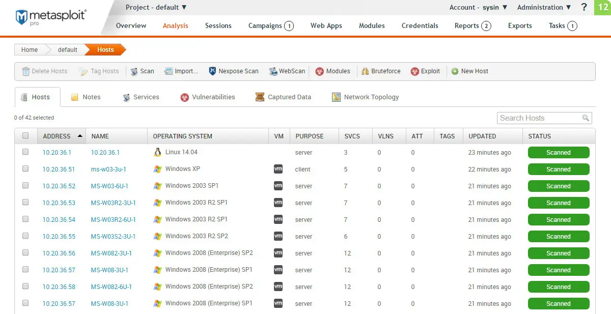

请访问原文链接：Metasploit Pro 4.22.9-2026030301 (Linux, Windows) - 专业渗透测试框架 查看最新版。原创作品，转载请保留出处。
作者主页：sysin.org
世界上最广泛使用的渗透测试框架
知识就是力量，尤其是当它被分享时。作为开源社区和 Rapid7 之间的合作，Metasploit 帮助安全团队做的不仅仅是验证漏洞、管理安全评估和提高安全意识 (sysin)；更重要的是，它赋能防御者，使其能够始终在攻防博弈中领先一步（甚至两步）。

欢迎来到 Metasploit 的世界。你是否是一名 Metasploit 用户，想要开始使用它，或者提升你的漏洞利用与渗透能力（前提是对你有授权的目标进行测试）？最快的入门方式是下载 Metasploit 每夜构建安装包（nightly installers）。通过它，你可以同时获得免费的开源 Metasploit Framework，以及 Metasploit Pro 的免费试用版。
版本比较
Open Source: Metasploit Framework
下载：Metasploit Framework 6.4.135 (macOS, Linux, Windows) - 开源渗透测试框架
Commercial Support: Metasploit Pro
| All Features | Pro | Framework |
|---|---|---|
| - Collect | ||
| De-facto standard for penetration testing with more than 1,500 exploits | ✅ | ✅ |
| Import of network data scan | ✅ | ✅ |
| Network discovery | ✅ | ❌ |
| Basic exploitation | ✅ | ❌ |
| MetaModules for discrete tasks such as network segmentation testing | ✅ | ❌ |
| Integrations via Remote API | ✅ | ❌ |
| - Automate | ||
| Simple web interface | ✅ | ❌ |
| Smart Exploitation | ✅ | ❌ |
| Automated credentials brute forcing | ✅ | ❌ |
| Baseline penetration testing reports | ✅ | ❌ |
| Wizards for standard baseline audits | ✅ | ❌ |
| Task chains for automated custom workflows | ✅ | ❌ |
| Closed-Loop vulnerability validation to prioritize remediation | ✅ | ❌ |
| - Infiltrate | ||
| Basic command-line interface | ❌ | ✅ |
| Manual exploitation | ❌ | ✅ |
| Manual credentials brute forcing | ❌ | ✅ |
| Dynamic payloads to evade leading anti-virus solutions | ✅ | ❌ |
| Phishing awareness management and spear phishing | ✅ | ❌ |
| Choice of advance command-line (Pro Console) and web interface | ✅ | ❌ |
系统要求
MINIMUM HARDWARE:
- 2 GHz+ processor
- 4 GB RAM available (8 GB recommended)
- 1 GB available disk space (50 GB recommended)
OPERATING SYSTEMS:
x64 versions of the following platforms are supported.
Linux
- Ubuntu Linux 24.04 LTS (Recommended)
- Ubuntu Linux 20.04 LTS
- Ubuntu Linux 18.04 LTS
- Ubuntu Linux 16.04 LTS
- Ubuntu Linux 14.04 LTS
- Red Hat Enterprise Linux 9 or later (Not listed)
- Red Hat Enterprise Linux 8 or later
- Red Hat Enterprise Linux 7.1 or later
- Red Hat Enterprise Linux 6.5 or later
Windows
- Microsoft Windows Server 2025 (Not listed, Tested by sysin)
- Microsoft Windows Server 2022
- Microsoft Windows Server 2019
- Microsoft Windows Server 2016
- Microsoft Windows Server 2012 R2
- Microsoft Windows 11
- Microsoft Windows 10
BROWSERS:
- Google Chrome (latest)
- Mozilla Firefox (latest)
新增功能
Metasploit Pro 最新发布
Metasploit Pro 版本 4.22.9 发行说明包含在下载链接中。
Metasploit Pro 版本 4.22.8-2025102701
📅 软件发布日期：2025 年 10 月 27 日 | 📰 发布说明发布时间：2025 年 10 月 27 日
🆕 新模块内容
- #20579 - 添加了一个辅助扫描模块，用于检测 Listmonk 版本 >= v4.0.0 且 < v5.0.2 中不安全的模板函数漏洞。该漏洞允许具有最小权限的已认证用户通过活动（campaign）模板预览读取主机系统上的任意环境变量。Listmonk 部署中的环境变量通常包含数据库凭据、SMTP 密码、API 密钥和管理员凭据等敏感信息，可能导致系统被完全攻破。
- #20585 - 添加了一个针对 CVE-2025-60787 的模块，该漏洞是 MotionEye <= 0.43.1b4 中的已认证模板注入漏洞。
- #20586 - 添加了一个 Windows 文件格式模块，能够生成恶意的 Windows Script Host 文件。
- #20630 - 为 Vvveb 添加了一个新模块，利用代码编辑器中的代码注入漏洞（CVE-2025-8518）。该模块需要对 CMS 的凭据 (sysin)。
✨ 增强与功能
- #20595 - 为 331 个不同模块补充添加了缺失的 CVE。
🐞 修复的错误
- Pro：修复了在 Metasploit 更新或安装过程中导致数据库服务无法运行的问题。
- Pro：修复了
Single Credentials TestingMetaModule 的重放（replay）能力问题。 - #20546 - 修复了
auxiliary/scanner/ssh/ssh_login_pubkey模块中存在的多个问题。 - #20563 -
ldap_esc_vulnerable_cert_finder在运行注册表检查时现在会检查 CA 和 DC。 - #20582 - 修复了随机标识符库的回归问题，该问题在处理 PHP 代码时导致失败。
- #20608 - 修复了 Windows PE Inject 有关的一个错误。
- #20611 - 修复了
exploit/multi/local/periodic_script_persistence模块中的一个错误，该错误导致本地漏洞建议器（Local Exploit Suggester）出现问题 (sysin)。 - #20636 - 修复了网络爬虫处理未找到页面时的一个错误。
- #20639 - 修复了运行
scanner/oracle/oracle_login模块时的崩溃问题。
Metasploit Pro 版本 4.22.8-20251014
📅 软件发布日期：October 14, 2025 | 📰 发布说明发布时间：October 15, 2025
🆕 新模块内容
- #20507 - 我们新增了针对 Commvault 的未认证远程代码执行利用模块，可用于识别环境中的关键漏洞（CVE-2025-57790、CVE-2025-57791、CVE-2025-57788）。
- #20518 - 新的辅助模块用于 NTLM 泄露分析，能更好地洞察潜在凭证暴露风险。
- #20536 - 引入了用于 Docker 镜像持久化和利用过载的 systemd 服务的新模块。
- #20538 - 引入了一个新的持久化模块，该模块利用被过载的 systemd 服务 (sysin)。该模块会为特定的 systemd 服务在
/etc目录下创建override.conf。一旦服务重启，override.conf中的恶意载荷将会被执行。注意：该模块需要 root 权限。 - #20559 - 一个新的 FreePBX SQL 注入模块（CVE-2025-57819），可以检测通过 SQL 注入实现的远程代码执行。
✨ 增强与功能
- Pro：改进了项目列表页面、项目仪表盘以及相关漏洞概览页的性能。
- Pro：当某些命令行工具需要 root 权限时，会清晰地通知用户。
- #20517 - 我们为 PostgreSQL 登录扫描器增加了 SSL 支持，拓宽了适用范围，并整合了 MITRE ATT&CK 技术 T1003 的引用，帮助你更快地将模块映射到特定攻击模式以提升威胁模拟效果。
- #20533 - 为相关模块内容添加了与 MITRE ATT&CK 技术 T1003 及其子技术的引用，便于用户快速识别用于模拟特定攻击的模块内容。
- #20566 -
esc_update_ldap模块已优化，能够智能管理影子凭据并提高其效率。
🐞 修复的错误
- Pro：当被动网络发现 MetaModule 在运行时遇到错误时，改进了错误详情的显示。
- Pro：改进了备份系统以提高可靠性和内存效率。此优化对拥有大量数据集或系统资源受限的客户尤其有益。现有备份文件与此更新保持完全兼容。
- Pro：修复了导致社交工程活动页面无法加载的错误。
- Pro：修复了在不存在 systemd 的 Linux 系统上导致卸载问题的错误。
- Pro：修复了在执行包含嵌套文件夹的备份时，Metasploit Pro 备份功能漏掉文件的问题。
- #20535 - 修复了登录扫描器未遵守
ANONYMOUS_LOGIN模块选项的错误。 - #20548 - 修复了在
linux/samba/is_known_pipename中执行 samba 共享迭代时出现的问题。 - #20553 - 修复了在某些条件下导致私有类型的存储凭据未被省略的错误。
- #20557 - 修复了在存在多值
RHOSTS时导致报表利用错误的问题。通过验证RHOSTS为有效 IP 地址来解决该问题。 - #20561 - 修复了在运行报告无数据的注记（notes）的模块时导致的崩溃，例如
admin/mssql/mssql_enum和scanner/http/wordpress_scanner模块。 - #20562 - 修复了当版本详情中包含
-字符时，WebLogic 版本识别逻辑的错误。
下载地址
Metasploit Pro 4.22.9-2026030301 for Linux x64
- 百度网盘链接：https://pan.baidu.com/s/1-RAtnkARTqRB6FgOtaIL6w?pwd= <专享>
- 已上传到上个版本相同目录中。
- 推荐运行在 Ubuntu 24.04 OVF 中！
Metasploit Pro 4.22.9-2026030301 for Windows x64
- 百度网盘链接：https://pan.baidu.com/s/1gQPhLgIUvofXxn3y1DauMw?pwd= <专享>
- 已上传到上个版本相同目录中。
- 推荐运行在 Windows Server 2022 OVF 中！
相关产品：Nexpose 8.51.0 for Linux & Windows - 漏洞扫描
更多：HTTP 协议与安全

文章用于推荐和分享优秀的软件产品及其相关技术，所有软件默认提供官方原版（免费版或试用版），免费分享。对于部分产品笔者加入了自己的理解和分析，方便学习和研究使用。任何内容若侵犯了您的版权，请联系作者删除。如果您喜欢这篇文章或者觉得它对您有所帮助，或者发现有不当之处，欢迎您发表评论，也欢迎您分享这个网站，或者赞赏一下作者，谢谢！
 支付宝赞赏
支付宝赞赏  微信赞赏
微信赞赏赞赏一下
敬请注册！点击 “登录” - “用户注册”（已知不支持 21.cn/189.cn 邮箱）。 请勿使用联合登录（已关闭）。